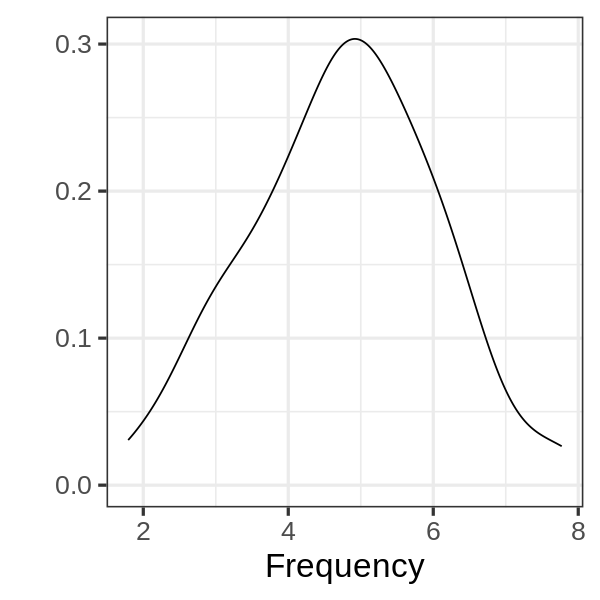
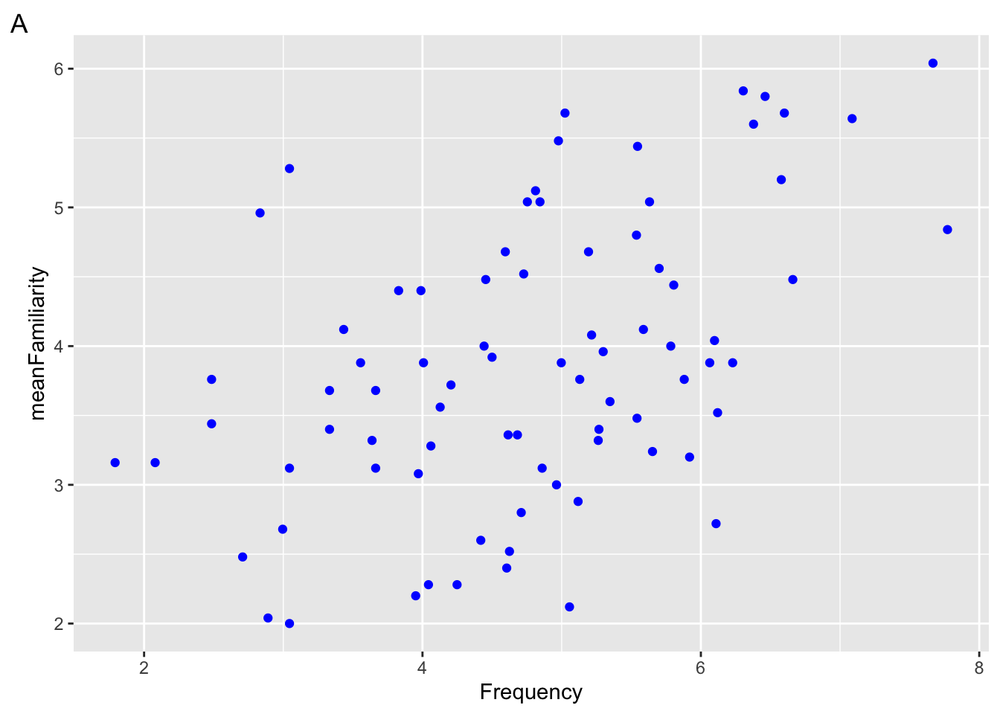
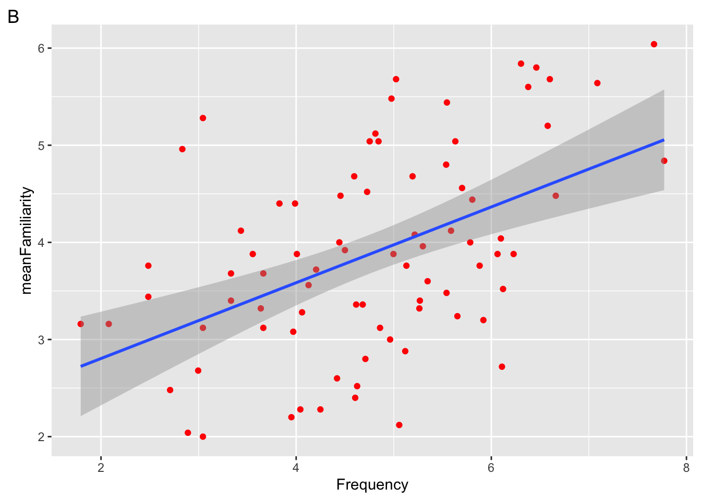
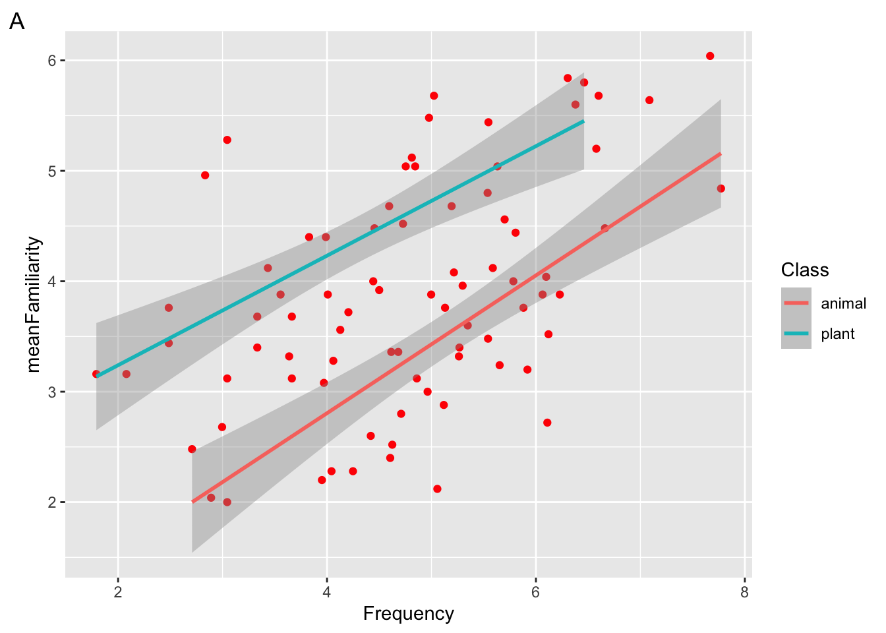
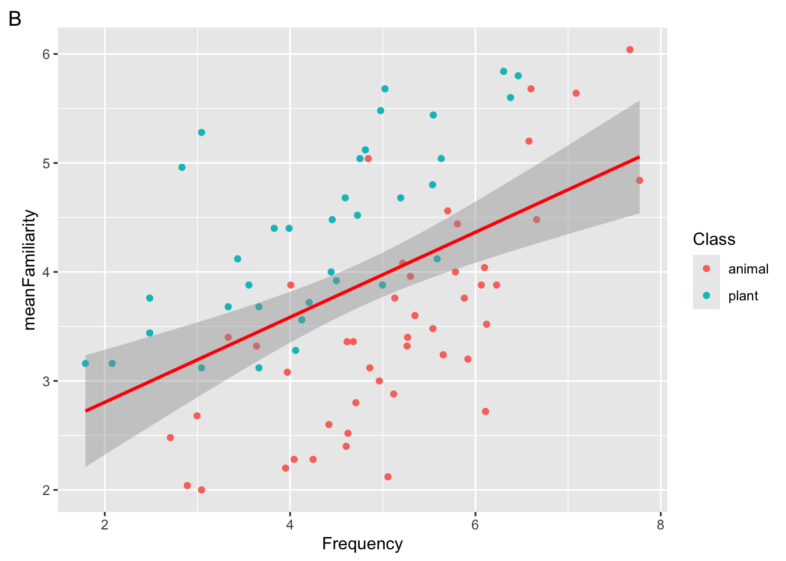
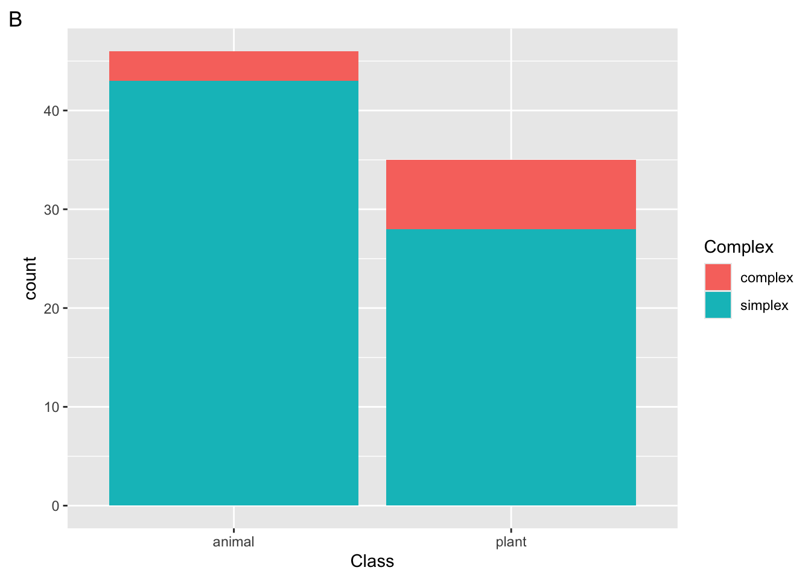
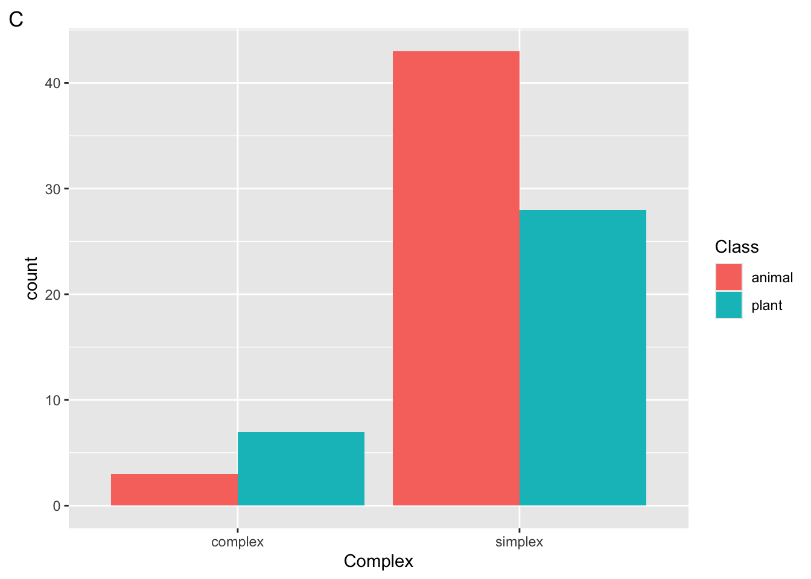
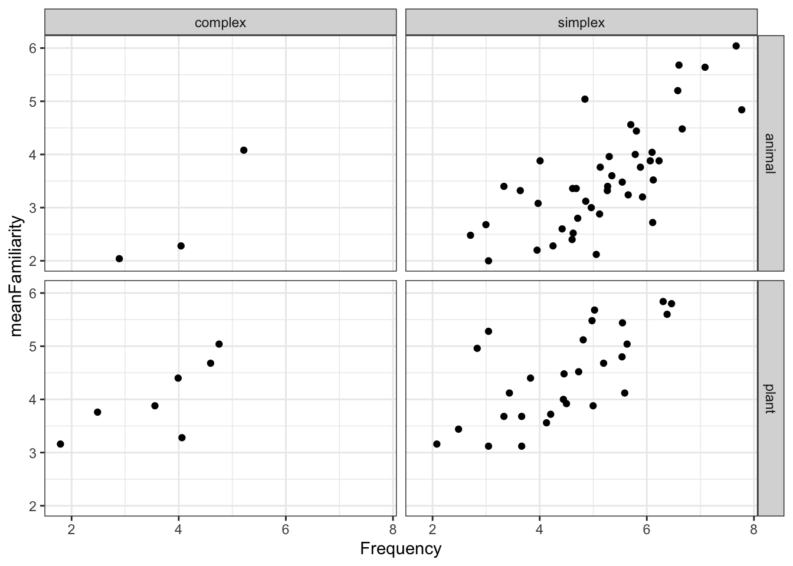

library(ggplot2)
library(languageR)Lab 2: Data visualization
Not graded, just practice
Practice your new ggplot skills with these practice exam questions! Best to open a fresh Google Colab notebook and test things out! Refer to the study guide to find answers as well.
Tip
More than one answer may be correct!
Materials from lab
1 Setup
We will continue working with the ratings dataset from the visualization lecture (part of the languageR package).
It contains the following variables:
str(ratings)'data.frame': 81 obs. of 14 variables:
$ Word : Factor w/ 81 levels "almond","ant",..: 1 2 3 4 5 6 7 8 9 10 ...
$ Frequency : num 4.2 5.35 6.3 3.83 3.66 ...
$ FamilySize : num 0 1.39 1.1 0 0 ...
$ SynsetCount : num 1.1 1.1 1.1 1.39 1.1 ...
$ Length : int 6 3 5 7 9 7 6 6 3 6 ...
$ Class : Factor w/ 2 levels "animal","plant": 2 1 2 2 2 2 1 2 1 1 ...
$ FreqSingular : int 24 69 315 26 19 24 53 74 155 37 ...
$ FreqPlural : int 42 140 231 19 19 6 78 77 103 14 ...
$ DerivEntropy : num 0 0.562 0.496 0 0 ...
$ Complex : Factor w/ 2 levels "complex","simplex": 2 2 2 2 2 2 2 2 2 2 ...
$ rInfl : num -0.542 -0.7 0.309 0.3 0 ...
$ meanWeightRating: num 1.49 3.35 2.19 1.32 1.44 ...
$ meanSizeRating : num 1.89 3.63 2.47 1.76 1.87 ...
$ meanFamiliarity : num 3.72 3.6 5.84 4.4 3.68 4.12 2.12 5.68 3.2 2.2 ...2 Data viz day 1
Fill in the blanks below with one of the following words:
data,aesthetics,geom.The basic ggplot involves: (1) using your , (2) defining how variables are mapped to visual properties (), and (3) determining the geometrical object that a plot uses to represent data ()
When ggplot2 maps a categorical variable to an aesthetic, it automatically assigns a unique value of the aesthetic to each level of the variable. What is this process called?
The code below generated which of the following figures?
ggplot( data = ratings, mapping = aes(x = Frequency, y = meanFamiliarity) ) + geom_point(mapping = aes(color = Class)) + geom_smooth(method = "lm") + theme_classic(base_size=20)
Suppose we want to map the variable
Complexto the color aesthetic in a scatterplot. Which of the following arguments could we pass togeom_point()?To adjust the size of the font to 20pt in the complete theme
theme_minimal(), what argument should we include?Which geoms are depicted in the following figure?

Which geoms are depicted in the following figure?

3 Data viz day 2
3.1 Plot 1
Given code blocks a, b, and c; and the plot below:
# CODE BLOCK a ---------------------------#
ggplot(
data = ratings,
mapping = aes(x = Frequency, y = meanFamiliarity)
) +
geom_point(color = "blue")
# CODE BLOCK b ---------------------------#
ggplot(
data = ratings,
mapping = aes(x = Frequency, y = meanFamiliarity, color = "blue")
)
# CODE BLOCK c ---------------------------#
ggplot(
data = ratings,
mapping = aes(x = Frequency, y = meanFamiliarity)
) +
geom_point()
Which of the code blocks above generate the plot ?
In the plot above, is the color aesthetic mapped, set, or both?
In the plot above, which of the following aesthetics should we set to make the points more transparent?
In plot A above, which of the following would change the x axis label to “FQ”?
3.2 Plot 2
Given the following plot:

In the plot above, which geom(s) are used to represent the data?
True or false, the blue line in the plot above is mapped to the Class aesthetic?
In the plot above, which of the following variables is mapped to the x aesthetic?
True or false, in the plot above, the default statistical transformation in the geom responsible for the red dots is “identity”.
3.3 Code block 1
Suppose we run the following code.
ggplot(
data = ratings,
mapping = aes(x = Frequency, y = meanFamiliarity, color = Class)
) +
geom_point() +
geom_smooth(method = "lm", color = "red") 

Which of the following plots will be returned?
Which aesthetic is mapped and which is set?
Which aesthetic is global and which is local?
3.4 Code block 2
Suppose we run the following code block
ggplot(
data = ratings,
mapping = aes(x = Class, fill = Complex)
) +
geom_bar() 



Which plot will be returned?
What would happen if we added the layer
scale_fill_manual(values = c("green", "orange"))to the following plot?What argument could we add to
geom_bar()to add a black border around the bars?
3.5 Plot 3
Consider the following plot

To generate the facets in the plot above, which of the following lines of code must be included?
Which of the following geoms are added to the plot above?
Which built-in theme is applied to the following plot?